ABOUT THE GAME:
This game is a recreation of FNaF 2 (2014) made using web developement languages (HTML,CSS,JS), database management languages (PHP,MYSQL) and the JS library called JQuery
This game tries it's best to be as faithful to the original as possible while still adding new stuff to the game
(keep in mind i am still a beginner programmer so this game can and will have a decent ammount of bugs)
AUTHOR:

<- back